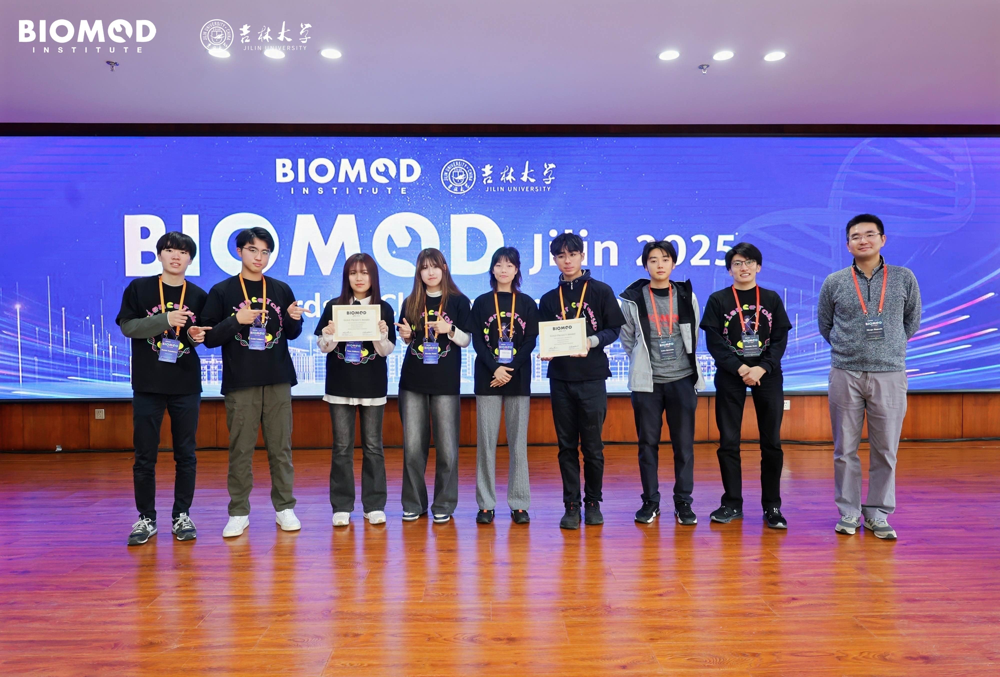

大会実績
2025 BIOMOD Jamboreeに参加し、Gold Prize（金賞）を獲得しました。

中国・長春市（吉林大学）にて開催された国際生体分子デザインコンペティション「BIOMOD 2025 Jamboree」に出場し、当チーム（BIOMOD Team Science Tokyo）はプロジェクトアワードにおいてGold Prize（金賞）を獲得いたしました。
今大会では、「Bow-like DNA bending method using Avidin–Biotin binding（アビジン‐ビオチン結合を利用した弓状DNA変形法）」をテーマに研究発表を行いました。強固で安定したアビジン-ビオチン結合を利用してDNA構造を弓のように引き絞って湾曲させ、結合位置やリンカー長によって曲げ角度を精密に制御する新たなDNA 3D曲面設計手法を提案し、Wiki（ウェブサイト）・紹介動画・現地での英語プレゼンテーションの総合審査において高く評価されました。
日頃よりご指導いただいた先生方や、活動を支えてくださった関係者の皆様、温かいご支援・ご声援をいただいた皆様に心より感謝申し上げます。
【2025年度プロジェクト関連リンク】
- 2025 プロジェクトWiki：Bow-like DNA bending method using Avidin–Biotin binding
- 大会・プロジェクト紹介：ABOUT BIOMODページ